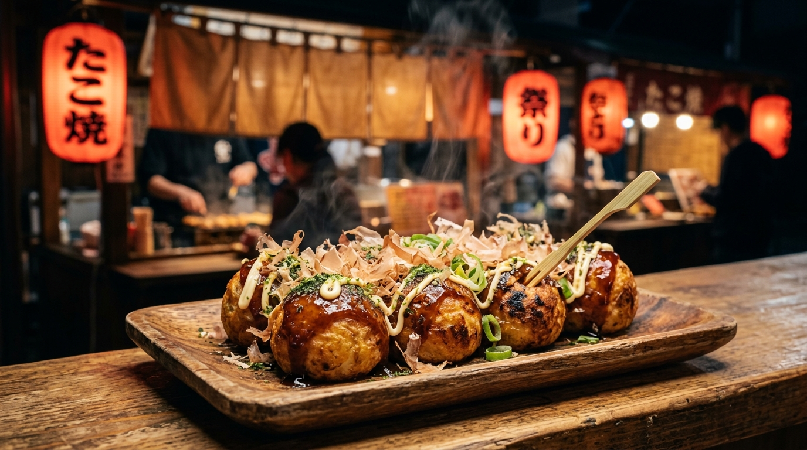

一玉に魂を込める、極上の職人たこ焼き
厳選された大粒の真蛸、数種類の削り節から引いた秘伝の出汁。合わさる瞬間の奇跡を、夜風に揺れる灯火の下でお楽しみください。

日本近海で獲れた身の引き締まった真蛸のみを厳選。噛むほどに広がる旨味と絶妙な歯ごたえが特徴です。
鰹節、昆布、煮干しから丁寧にひいた天然出汁をベースに、独自の配合で仕上げた極上生地。ソースなしでも美味しく召し上がれます。
特製の極厚特注鉄板を使用し、強火で一気に焼き上げます。外側の香ばしさと、中の極上のとろみは職人の勘だけが生み出せる技です。
お好みのたこ焼きとトッピングを選んで、あなただけの極上の一皿を作りましょう！
たこ焼きのベースを選択してください
〒104-0061 東京都中央区銀座 5丁目 8-1 蛸ノ灯ビル1F
03-1234-5678
営業時間: 17:00 〜 24:00 (L.O. 23:30)
定休日: 毎週水曜日、第二火曜日